Step 1 Preparing model errors¶
STEP 1.1 Download (or prepare) the model inputs¶
First we need to download (or copy over) the model inputs under certain formats in the working directory. Note that the global model data (fcst + analysis) must be processed with WPS so it has the consistent projection with the LAM model data
1.1.1 if download model inputs from AWS S3¶
download global model forecasts¶
global model forecasts are downloaded from global_fcst_on_s3 in AWS S3,
the filename must be in the format of global_a[YYYMMDDHH]_v[YYYYMMDDHH].nc,
where YYYYMMDDHH represent either the analysis time or valid time.
Making sure that the file structure in AWS S3 is similar as below:
{kind=link}
For example, in the above screenshot, the filename global_a2018100112_v2018100200.nc
means a 12h global forecasts initialized at 1200 UTC 01 Oct 2018
(valid at 0000 UTC 02 Oct 2018)
The following codes are used to determine the location of global forecasts in S3:
cur_hist_glb_fcst_path_on_s3 = os.path.join(
global_fcst_on_s3, 'global_a{}_v{}.nc'.format(cur_ana_datetime.strftime('%Y%m%d%H'),
cur_val_datetime.strftime('%Y%m%d%H')))
The local destination of the global forecasts is cur_hist_dir,
and the filename must follow the format of glb_l[forecast_length]_d0[domain_id].nc,
where both forecast_length and domain_id are represented by numbers
(e.g., glb_l12_d02.nc). The following codes are used to determine the
location of global forecasts in a local directory:
cur_hist_glb_fcst_path_on_local = os.path.join(
cur_hist_dir, 'glb_l{}_d0{}.nc'.format(fcst_length, domain_id))
download global model analysis¶
Downloading global model analysis is similar to the process of
downloading global forecasts. The difference between global forecasts
and analysis is that, in a global analysis,
global_a[YYYMMDDHH]_v[YYYYMMDDHH].nc has the same analysis
and valid times. Moreover, the local filename for the global analysis
has a fixed forecast_length as 0. For example, glb_l0_d0[domain_id].nc
download LAM forecasts¶
LAM forecasts sit directly in the operational archive directory,
and the filename follows regulation of the direct WRF output,
e.g., wrf_hourly_[model_name]_d0[domain_id]_{YYYY-MM-DD_HH:MM:SS}
where the date string at the end indicates the model valid time.
The local filename is similar to the ones of global models, which is
lam_l[forecast_length]_d0[domain_id].nc (e.g., lam_l12_d02.nc).
The codes determine the source (on S3) and destination (local) are defined as:
cur_hist_lam_fcst_path_on_s3 = os.path.join(
lam_fcst_on_s3, lam_model_name,
cur_ana_datetime.strftime('%y'),
cur_ana_datetime.strftime('%m'), cur_ana_datetime.strftime('%d'),
cur_ana_datetime.strftime('%H'),
'wrf_hourly_{}_d0{}_{}'.format(
lam_model_name,
domain_id,
cur_val_datetime.strftime('%Y-%m-%d_%H:00:00')))
cur_hist_lam_fcst_path_on_local = os.path.join(
cur_hist_dir, 'lam_l{}_d0{}.nc'.format(fcst_length, domain_id))
{kind=link}
1.1.2 if copy model inputs from somewhere else¶
the local file structure must be shown as above, which has the valid time ('YYYYMMDDHH') as the upper directory name, and under this directory there are model data which are named as:
- global model:
glb_l[lead_hour]_d0[domain_id].nc - LAM model:
lam_l[lead_hour]_d0[domain_id].nc
1.1.3 check if all the required data are presented¶
In order to estimate the model error, a full set of data (under the directory with the valid time as directory name) must include: global forecast data, global analysis data and LAM forecast data. The following codes are used to check the availability of full dataset:
def check_hist_data(args):
all_data_available = {}
start_val_datetime = args.start_datetime
end_val_datetime = args.end_datetime
cur_val_datetime = start_val_datetime
while cur_val_datetime <= end_val_datetime:
all_data_available[cur_val_datetime.strftime('%Y%m%d%H')] = \
var_bld_err_processing.init_all_data_available(
int(args.forecast_length))
# check forecasts
for modeltype in MODELTYPES:
model_path = os.path.join(
args.work_dir, 'hist_data',
cur_val_datetime.strftime('%Y%m%d%H'),
'{}_l{}_d0{}.nc'.format(
modeltype,
int(args.forecast_length),
args.domain_id))
if not os.path.exists(model_path):
all_data_available[cur_val_datetime.strftime('%Y%m%d%H')][
modeltype][int(args.forecast_length)] = False
# check analysis
model_path = os.path.join(
args.work_dir, 'hist_data',
cur_val_datetime.strftime('%Y%m%d%H'),
'ana_l0_d0{}.nc'.format(args.domain_id))
if not os.path.exists(model_path):
all_data_available[
cur_val_datetime.strftime('%Y%m%d%H')]['ana'][0] = False
cur_val_datetime = cur_val_datetime + timedelta(
seconds=3600*int(args.analysis_interval))
return all_data_available
The output all_data_available is a dict with nested keys as:
valid_time => data_type => lead_hour
Where valid time has the format of YYYYMMDDHH, data_type can be
either ana or fcst, and lead_hour is the lead hour for the data
(e.g., if data_type is ana, lead_hour must be 0). A True value
will be returned if the full dataset is available
STEP 1.2 Determine the model error estimation criteria¶
In the blending scheme, the quality of the blended analysis is usually dependent on several criteria (these criteria are obtained from some sensitivity studies in New Zealand):
In the codes, there are two things to be considered to meet this criteria:
- the ratio of the large scale information in dBZ
- the ratio of rainfall areas over lands
1.2.1 It would be good if the background does not have significant large scale forcing:¶
(a). Obtain the column maximum dBZ:¶
The codes obtaining the column maximum dBZ are:
mdbz = getvar(ncfile, 'mdbz').values
The mdbz calculated (as a 2D array) is shown below:
{kind=link}
(b).Obtain the power along latitude using Welch's method::¶
The codes obtaining the power along altitude are:
for i in range(0, data_shape[0]):
cur_dbz = mdbz[i, :]
model_power_along_lat.append(signal.welch(cur_dbz, nperseg=data_shape[1])[1])
model_power_along_lat = numpy.asarray(model_power_along_lat)
model_power_along_lat = numpy.mean(model_power_along_lat, 0)
The model_power_along_lat (1D, x-axis indicates the wavenumber) is shown below:
{kind=link}
(c). Obtain the ratio of large scale power over the total power:¶
The threshold of determining the large scale power would be the maximum tolerable wavenumber (e.g., the maximum distance between different radiosonds):
total_power = numpy.sum(model_power_along_lat)
large_scale_power = numpy.sum(model_power_along_lat[0:max_wavenumber])
large_scale_power_ratio = large_scale_power/total_power
1.2.2 It would be good if the background is mostly dry:¶
(a). Obtain the rainfall area over lands:¶
The codes obtaining the rainfall over lands:
mdbz[topo < lowest_land_height] = numpy.NaN
For example, maximum reflectivity over New Zealand is shown as below:
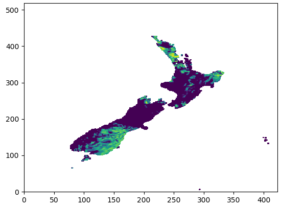{kind=link}
Then we can have the ratios between total wet grid points (raining) and dry grid points:
wet_points = numpy.nansum(mdbz > lowest_dbz_consider_dry)
dry_points = numpy.nansum(mdbz < lowest_dbz_consider_dry)
wet_ratio = wet_points/float(dry_points + wet_points)
1.2.3 Determine if the blending can be continued¶
If the system:
- does not have very strong large-scale forcing:
- threshold is
WET_CRITERIAS['max_allowed_large_scale_power']
- threshold is
- the system is mostly dry:
- threshold is
WET_CRITERIAS['max_allowed_wet_ratio']
- threshold is
we consider that the blending process can be continued:
if large_scale_power_ratio < WET_CRITERIAS['max_allowed_large_scale_power'] and wet_ratio < WET_CRITERIAS['max_allowed_wet_ratio']:
return True, large_scale_power_ratio, wet_ratio
else:
return False, large_scale_power_ratio, wet_ratio
STEP 1.3 extract the model data¶
If the system passes the wet criteria checks (e.g., how strong of the large scale information), we start extracting the model data for * (1) global model analysis, * (2) global model forecasts and * (3) LAM forecasts
1.3.1 Read global model forecasts and LAM forecasts¶
For example, in the following codes, MODELTYPES is ['lam', 'glb'].
Moreover, if the model variable is wind (e.g., either U and V), wind speed is stored:
for modeltype in MODELTYPES:
gridata[cur_val_datetime.strftime('%Y%m%d%H')][modeltype] = {}
gridata[cur_val_datetime.strftime('%Y%m%d%H')][modeltype][fcst_length] = {}
model_path = os.path.join(
work_dir, 'hist_data',
cur_val_datetime.strftime('%Y%m%d%H'),
'{}_l{}_d0{}.nc'.format(modeltype, fcst_length, domain_id))
(gridata[cur_val_datetime.strftime('%Y%m%d%H')][modeltype][fcst_length],
topo, model_height) = obtain_griddata(model_path, model_variable)
if model_variable in ['U', 'V']:
gridata_wind_spd[modeltype] = {}
gridata_wind_spd[modeltype][fcst_length], _, _ = obtain_griddata(model_path, 'UV')
gridata has the structure of:
valid_time(YYYYMMDDHH) => lam/glb => forecast_length
if winds data are required, we also have the wind speed data stored in gridata_wind_spd
1.3.2 Read global model analysis data¶
The following codes show how the global model analysis is obtained:
model_path = os.path.join(work_dir, 'hist_data', cur_val_datetime.strftime('%Y%m%d%H'), 'ana_l0_d0{}.nc'.format(domain_id))
gridata[cur_val_datetime.strftime('%Y%m%d%H')]['ana'][0], topo, model_height = obtain_griddata(model_path, model_variable)
if model_variable in ['U', 'V']:
gridata_wind_spd['ana'] = {}
gridata_wind_spd['ana'][0], _, _ = obtain_griddata(model_path, 'UV')
The analysis data are also stored in gridata, which has the structure as:
valid_time(YYYYMMDDHH) => ana => 0
Same as the extracted model forecast data, if winds data are required,
we also have the wind speed analysis data stored in
gridata_wind_spd[YYYYMMDDHH]['ana'][0]
STEP 1.4 convert model data using FFT¶
After extracted global model (forecasts and LAM) and LAM model (forecasts), we convert the data from grid space to spectral space level by level:
for i in range(start_level, end_level):
cur_griddata_lvl = cur_griddata[i, :, :]
(cur_fft_coef_useful_lvl, cur_power_spectrum_useful_lvl,
cur_freq_rows_useful_lvl, cur_freq_cols_useful_lvl) = run_fft(cur_griddata_lvl)
1.4.1 convert 2D grid data using 2D FFT:¶
The 2D model grid data (at each level) is to be converted to a spectral space. For example, the following figure shows the temperature data at Level 0:
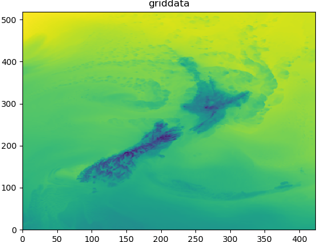{kind=link}
Where numpy.fft class is used to convert grid data to spectral data as below:
fft_coeff_all = numpy.fft.fft2(griddata)
fft_coeff_all = fftpack.fftshift(fft_coeff_all)
The following figure shows the 2D FFT coefficient as an example:
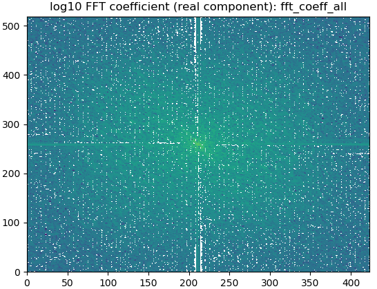{kind=link}
1.4.2 create the power from the grid data:¶
We also create the FFT power using the method mentioned in: https://www.researchgate.net/post/How_to_find_Power_Spectral_Density_PSD_of_any_image:
power_spectrum_useful = abs(numpy.fft.fftshift(numpy.fft.fft2(griddata)))**2
An example of the 2D FFT power is:
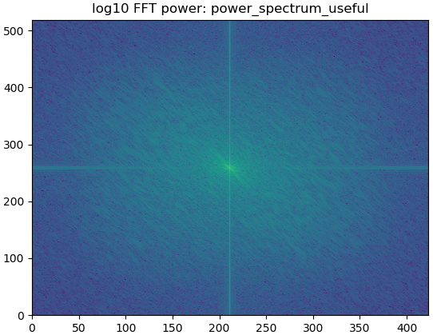{kind=link}
1.4.3 return standard powers and FFT coeffs¶
The function would return the FFT coefficients and powers for global (fcst and analysis) and LAM (fcst):
return (cur_fft_coef_useful, cur_power_spectrum_useful,
cur_freq_rows_useful, cur_freq_cols_useful)
Where:
* cur_fft_coef_useful: FFT coefficients with the structure of:
`model_type('lam/glb/lam') => forecast_lead_hour => model_levels`
(e.g., cur_fft_coef_useful['lam'][12][35])
cur_power_spectrum_useful: FFT powers with the structure of:`model_type('lam/glb/lam') => forecast_lead_hour => model_levels` (e.g., cur_power_spectrum_useful['lam'][12][35])cur_freq_rows_usefulandcur_freq_cols_useful: FFT frequencies
1.4.4 create the Welch power vertical profile from the grid data:¶
Besides calculating the power using the standard method (in 1.4.2),
we also calculate the power vertical power with the Welch's method:
power_spectrum_welch = fft_process.obtain_power_spectrum_using_welch(
gridata[cur_val_datetime.strftime('%Y%m%d%H')],
fcst_length, MODELTYPES,
total_model_levels, max_wavenumber)
where power_spectrum_welch has the structure of: model_type('lam/glb/lam') => forecast_lead_hour, which is a list
(e.g., power_spectrum_welch['lam'][12] = [1.1, 3.0, 7.5, 5.2, ..., 1.3])
The following figure shows the Welch power vertical profile (power_spectrum_welch):
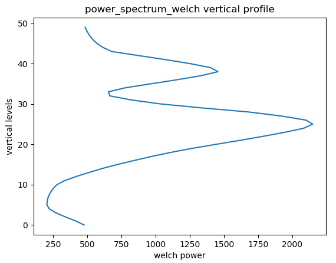{kind=link}
STEP 1.5 calculate model errors¶
Global model forecasts and LAM forecasts errors are calculated using the global model analysis as the "truth":
STEP 1.5.1 Running inverse FFT for global/LAM forecasts and global analysis for all required wavenumbers:¶
The maximum wave numbers is determined by the distance between different
radiosondes, and then the inverse FFT is carried out at each required frequencies:
for istep, cur_thres in enumerate(range(1, max_wavenumber_threshold)):
if cur_thres > max_wavenumber_threshold:
break
cur_lam = _run_ifft(numpy.asarray(fft_coef_useful['lam'][fcst_length]), cur_thres)
cur_glb = _run_ifft(numpy.asarray(fft_coef_useful['glb'][fcst_length]), cur_thres)
cur_ana = _run_ifft(numpy.asarray(fft_coef_useful['ana'][0]), cur_thres)
The following figure shows cur_lam, cur_glb and cur_ana at level 0 with the wavenumber 0:
{kind=link}
STEP 1.5.2 Obtain the user defined error ratio¶
One can tune the calculated model errors, e.g., the user can reduce the
calculated global model temperature forecast error by 25% by setting
BLD_VAR_ERR_RATIO['T']['glb'] = 0.75:
# user can set a ratio to time the calculated the errors
# default: for both global and LAM are both 1.0
(bld_var_err_lam_ratio, bld_var_err_glb_ratio) = \
_obtain_user_external_err_ratio(model_variable)
STEP 1.5.3 Obtain the model mean values over levels¶
We also need to obtain the vertical profile of model mean values of global and LAM forecasts and global analysis:
def _create_mean_profile(cur_lam, cur_glb, cur_ana):
cur_lam_mean_profile = numpy.mean(numpy.mean(cur_lam.real, 1), 1)
cur_glb_mean_profile = numpy.mean(numpy.mean(cur_glb.real, 1), 1)
cur_ana_mean_profile = numpy.mean(numpy.mean(cur_ana.real, 1), 1)
return (cur_lam_mean_profile, cur_glb_mean_profile, cur_ana_mean_profile)
The following figures show the mean model values over different levels (e.g., L0-L5, L15-L20 and L40-L45):
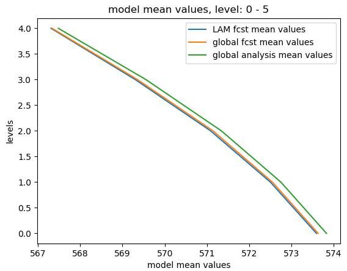 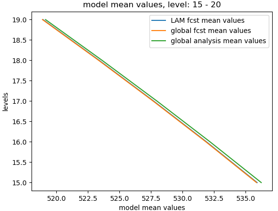 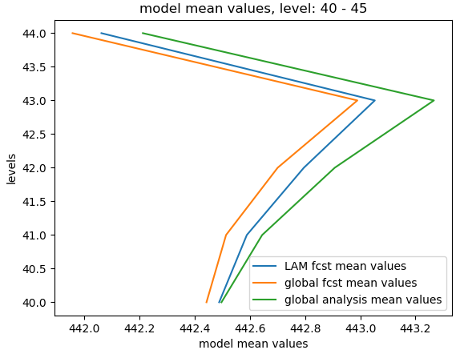{kind=link}
{kind=link}
{kind=link}
STEP 1.5.4 Obtain the model errors¶
STEP 1.5.4.1 calculate the errors of global forecasts and LAM forecasts¶
We assume that the truth is the global analysis:
lam_err = numpy.sqrt((cur_lam.real - cur_ana.real)**2)
glb_err = numpy.sqrt((cur_glb.real - cur_ana.real)**2)
Following figure shows the model errors at the level 0:
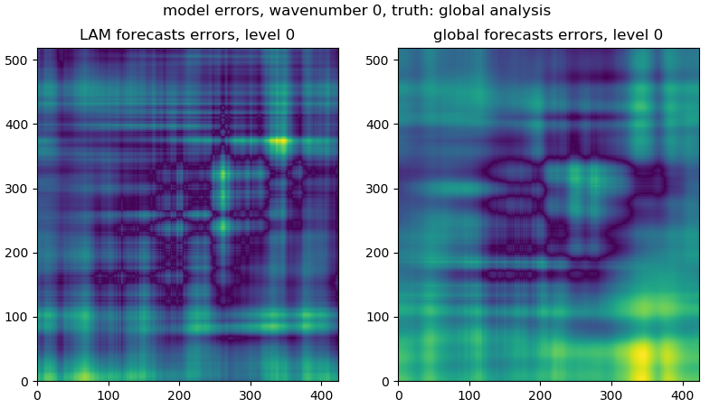{kind=link}
From the 3D lam_err and glb_err, we would have the mean error over levels for global and LAM models:
lam_err_profile_mean = numpy.mean(numpy.mean(lam_err, 1), 1)
glb_err_profile_mean = numpy.mean(numpy.mean(glb_err, 1), 1)
The following figures show the mean model errors over levels:
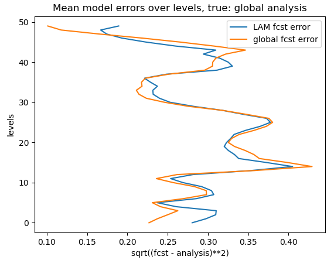{kind=link}
STEP 1.5.4.2 update model errors if the analysis data is not in the middle of global and LAM forecasts¶
According to BLUE, in theory the truth is expected to sit in the middle of two forecasts (global and LAM), however the fact is that the global analysis can be either on the left or right side of the two forecasts, so:
If the analysis data is not in the middle of global and LAM forecasts:
- global model error < LAM model error:
- global error == 0.0
- global model error > LAM model error:
- LAM error == 0.0
The above updates are calculated level by level over all levels. The codes are presented as:
for cur_lvl in range(0, total_model_levels):
cur_lam_mean = cur_lam_mean_profile[cur_lvl]
cur_glb_mean = cur_glb_mean_profile[cur_lvl]
cur_ana_mean = cur_ana_mean_profile[cur_lvl]
# step 2.1: if analysis is not in the middle of LAM and global model
if not ((cur_lam_mean < cur_ana_mean < cur_glb_mean) or
(cur_glb_mean < cur_ana_mean < cur_ana_mean)):
# step 2.2: if LAM has smaller error than the global model
if (abs(cur_lam_mean - cur_ana_mean) <
abs(cur_glb_mean - cur_ana_mean)):
lam_err_profile_mean[cur_lvl] = 0.0
# step 2.2: if LAM has bigger error than the global model
if (abs(cur_lam_mean - cur_ana_mean) >
abs(cur_glb_mean - cur_ana_mean)):
glb_err_profile_mean[cur_lvl] = 0.0
STEP 1.5.4.3 convert mean model error profile to a shifted power equivalent matrix:¶
We need to convert model error profile (e.g., a list or 2D array) to a 3D array. For the error matrix, the x and y axes are the FFT frequencies/wavenumbers (the central wavenumber sits in the middle of the matrix):
def _create_err_array(err_dist1, cur_coef_thres, pre_coef_thres, cur_rms):
data_shape = err_dist1[0,:,:].shape
# err_dist1 = numpy.zeros(err_dist.shape)
err_dist2 = deepcopy(err_dist1)
for i in range(0, err_dist1.shape[0]):
err_dist1[i, data_shape[0]/2-cur_coef_thres: data_shape[0]/2-pre_coef_thres, :] = cur_rms[i]
err_dist1[i, data_shape[0]/2+pre_coef_thres: data_shape[0]/2+cur_coef_thres, :] = cur_rms[i]
err_dist1[i, :, data_shape[1]/2-cur_coef_thres: data_shape[1]/2-pre_coef_thres] = cur_rms[i]
err_dist1[i, :, data_shape[1]/2+pre_coef_thres: data_shape[1]/2+cur_coef_thres] = cur_rms[i]
x = err_dist2 > 0.0
err_dist1[x] = err_dist2[x]
return err_dist1
The following figures give the error matrix for the global and LAM forecasts:
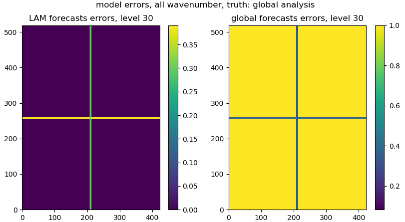{kind=link}
STEP 1.5.4.4 smooth the model error matrix:¶
We usually need to smooth the model error matrix for both global and LAM forecasts:
lam_err, glb_err = _smooth_model_error_over_frequencies(
lam_err, glb_err, total_model_levels,
smooth_number=3)
The following figures give the smoothed error matrix for the global and LAM forecasts:
{kind=link}
STEP 1.5.4.5 store the model error matrix:¶
After the above steps, we store the model error matrix in inv_fft_err:
inv_fft_err['lam'][fcst_length] = lam_err
inv_fft_err['glb'][fcst_length] = glb_err
The shapes of lam_err and glb_err are the same as the shape of
gridded data, where x and y axes indicate the FFT wavenumber/frequencies
from 2D FFT transform
(e.g., if the grid data has the shape of (50, 519, 423),
the lam_err and glb_err have the shape of (50, 519, 423) as well)